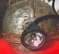

<!DOCTYPE HTML PUBLIC "-//W3C//DTD HTML 4.01 Transitional//EN">
<HTML>
<HEAD>
<META http-equiv="Content-Type" content="text/html>
<META http-equiv="Content-Style-Type" content="text/css" media="all">
<TITLE>みいけ展示室</TITLE>
</HEAD>
<BODY>
<BLOCKQUOTE>
<TABLE>
  <TBODY>
    <TR>
      <TD width="516">
      <P class="MsoNormal" style="text-indent:71.65pt;mso-char-indent-count:4.92"><B style="mso-bidi-font-weight:normal"><FONT color="red" size="+1">展示品</FONT><SPAN lang="EN-US" style="font-size:16.0pt;
mso-font-width:90%"></SPAN></B><BR>
      </P>
      <TABLE>
        <TBODY>
          <TR>
            <TD width="91"></TD>
            <TD width="404">　　　　　　　　　<B>坑内帽</B><P>
　　　　　　（写真提供　大坂間氏）
            </TD>
          </TR>
        </TBODY>
      </TABLE>
      <p class=MsoNormal style='text-indent:11.0pt;mso-char-indent-count:1.0;
line-height:17.0pt;mso-line-height-rule:exactly'><FONT face="MS UI Gothic">ヘルメットの前部にはキャップ
ランプを取り付ける金具が付いていて、そこへキャップランプを装着し、つながれたコードでバッテリーに接続。そのバッテ
リー（約15ｃｍ×18ｃｍ大）は腰の後ろに付け作業する。ズシリとした重さで作業は大変だったという｡しかし、真っ暗闇の
地の底においては、このキャップランプの灯りのみが頼りだった。<spanlang=EN-US style='font-size:11.0pt'></span><BR>
　キャップランプは昭和28年頃から使われるようになり、それまでは、カーバイトのアセチレンガスを発生させて灯すガス
かんてら、油を使った油かんてらが使われていたと言い、しかしそれでは坑内ガスに引火すればひとたまりも無く、改良さ
れてバッテリー式のキャップランプが考案された。<br>
　また、ヘルメットに関しても、現在のアルミ製になったのは、昭和30年代に入ってからとのことで、それまでは布製の作
業用帽子だったという。</FONT></p>
</span>
</p>
<center></center>
<p class="MsoPlainText" align="center"><font size="2">三井三池炭鉱四山鉱（写真提供　河口さん） </font><span lang="EN-US"></o:p>
      </TD>
    </TR>
  </TBODY>
</TABLE>
</BLOCKQUOTE>

</BODY>
</HTML>